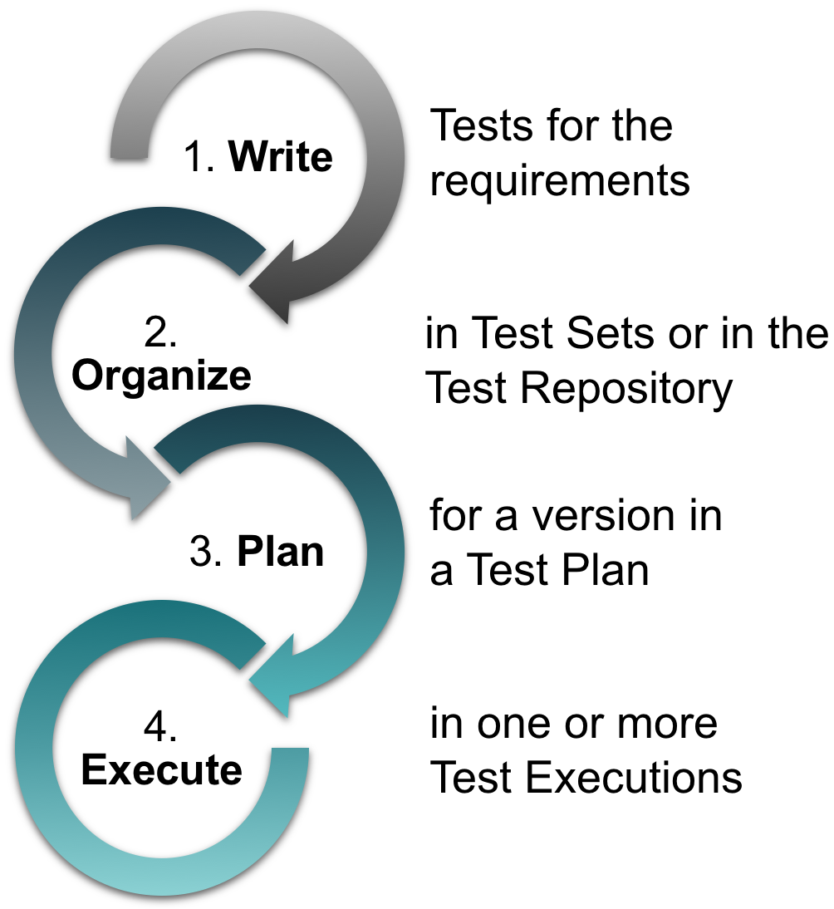
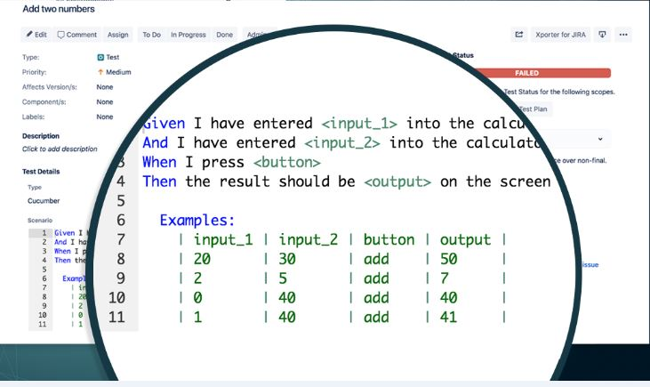
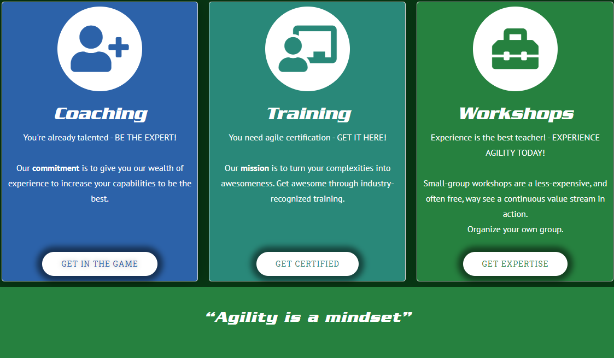

Automated Testing using Xray Test Management for Jira@ReadySetAgile |
John Riley Principle Agile Coach and Trainer |
 |
### Share Your Experience
---
 @ReadySetAgile
@ReadySetAgile @ReadySetAgile
@ReadySetAgile https://github.com/readysetagile
https://github.com/readysetagile https://www.linkedin.com/company/ready-set-agile/
https://www.linkedin.com/company/ready-set-agile/
### This is interactive!
---
### What is Xray for Jira?
---
Jira add-on from the
Atlassian marketplaceCreated by Xpand IT
A test management tool
End to end test management
of agile product releaseTest Repository to hold feature,
step, and taxonomy definitions
### Methods of testing In Xray
---
Manual
Generic
Cucumber
#### Xray test management at a glance
---

Test
 Test Set
Test SetTest Plan
Test Execution
Pre Condition
#### Value-add with Xray Automated testing
---

Jira Core functions
supported
Integrates with several
CI/CD environments
Integrates with other
testing frameworks
Export/import or REST API
Comprehensive documentation
Jira Core functions
supportedIntegrates with several
CI/CD environmentsIntegrates with other
testing frameworksExport/import or REST API
Comprehensive documentation
#### Reporting
---
### Case Study
---
Website: Car Gas Logging
### Let's see it work in Jira!
---
### Services at www.ReadySetAgile.com
---

### Thank you!
---

john@ReadySetAgile.com - John Riley
@ReadySetAgile @ReadySetAgile https://github.com/readysetagile https://www.linkedin.com/company/ready-set-agile/